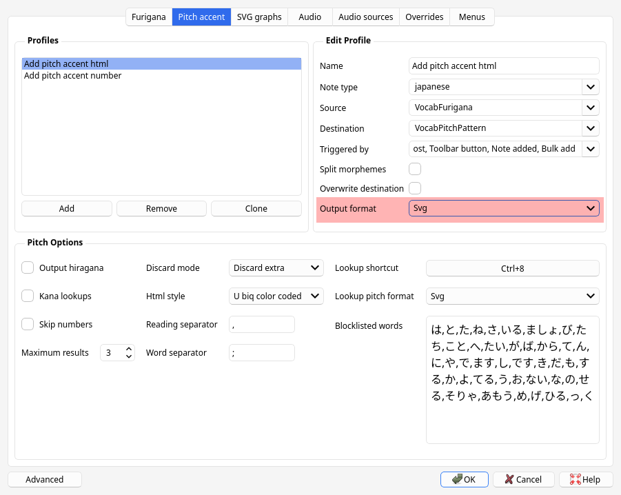
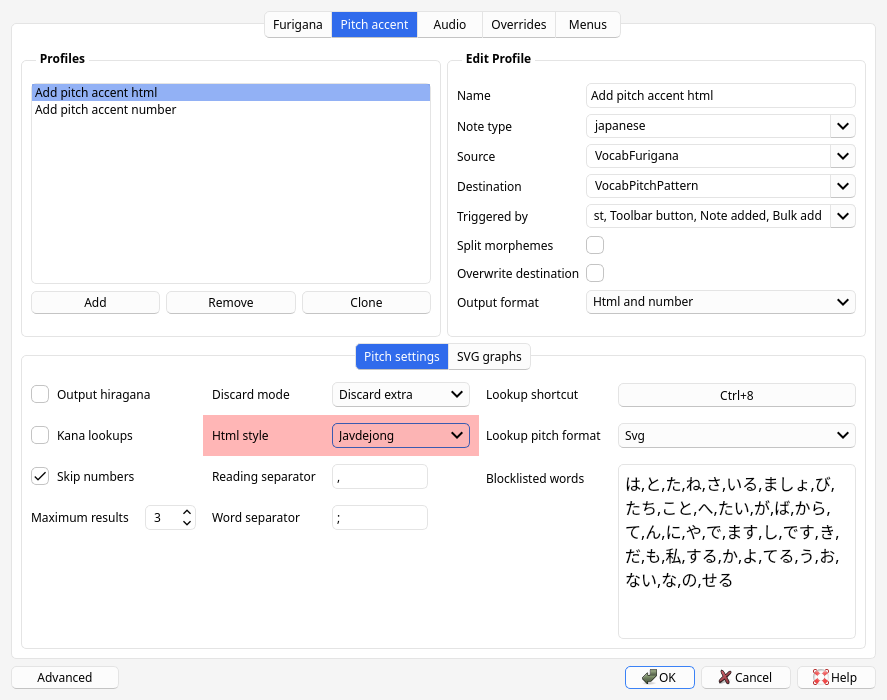
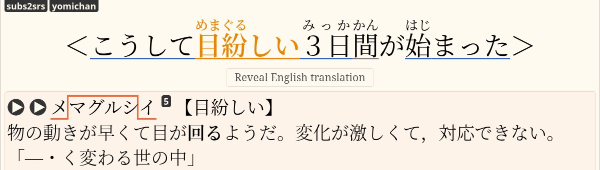
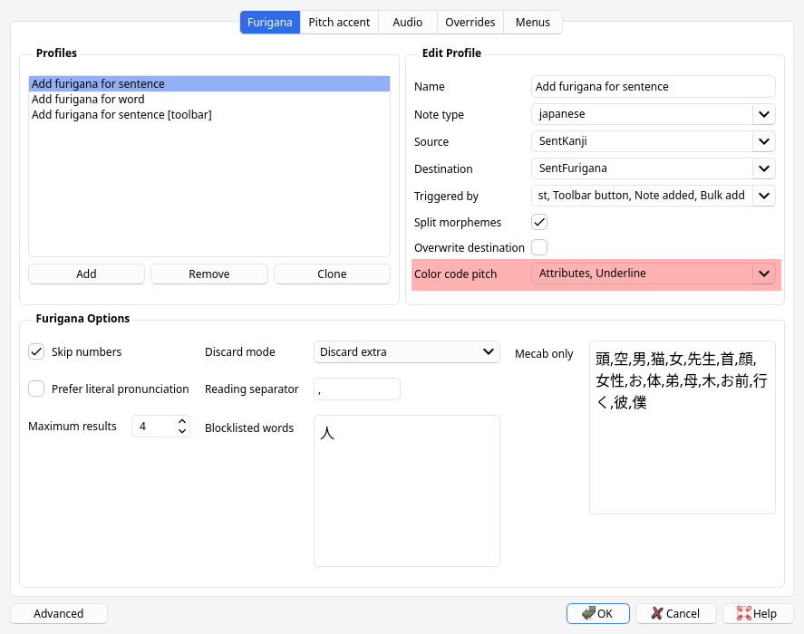
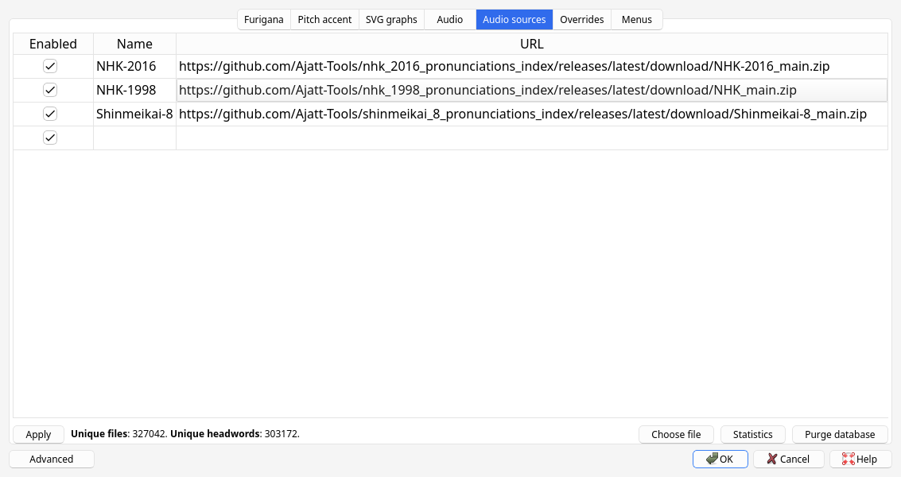
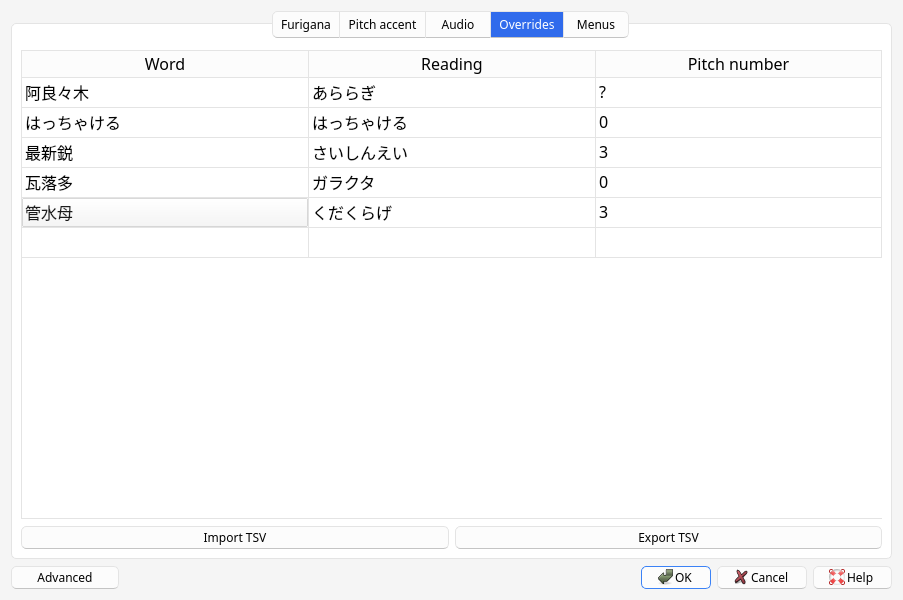

Japanese support for Anki
Anki can be used to learn a variety of different subjects, including languages. What makes Anki such a fantastic tool for Japanese learners is the vast array of plugins or "add-ons" that extend its functionality. One of the most useful add-ons for learning Japanese is AJT Japanese. Its main features include adding furigana, adding pitch accent information, and adding pronunciation audio files to Anki cards.
Installation
The installation process is similar to other Anki plugins and can be accomplished in three steps:
- Open the "Install Add-on" dialog by selecting "Tools" > "Add-ons" > "Get Add-ons..." in Anki.
- Input
1344485230into the text box labeledCodeand press the OK button to proceed. - Restart Anki when prompted to do so in order to complete the installation of AJT Japanese.
Neologism dictionary
To improve parsing quality (not necessary, but recommended), install these AUR packages:
To install AUR packages, you can use Trizen or any other AUR helper.
If you install the mecab-ipadic-neologd AUR package,
AJT Japanese will try to use
/usr/lib/mecab/dic/mecab-ipadic-neologd as a system dicdir for Mecab
when Anki starts.
If neologd is not found in this directory,
the add-on will try to search other directories on the hard drive.
Expected locations
/usr/lib/mecab/dic/mecab-ipadic-neologd/usr/local/lib/mecab/dic/mecab-ipadic-neologd/opt/homebrew/lib/mecab/dic/mecab-ipadic-neologd/usr/lib/mecab/dic/ipadic/usr/local/lib/mecab/dic/ipadic/opt/homebrew/lib/mecab/dic/ipadic
If the directory is not found in either of the expected directories, the add-on will fall back to the built-in dictionary, which is smaller (to fit on AnkiWeb).
Overview
The AJT Japanese add-on provides a range of features to make learning Japanese easier. The main feature is the furigana generation, which automatically adds furigana — readings of kanji characters. The readings appear as small kana characters above the kanji. When a card is created or modified by the user, furigana will be placed to a dedicated field, allowing the user to learn how words should be read. If a word has many readings, the add-on will print a list of readings, separated by commas by default. The learner needs to be aware that a word can be read different ways and learn the reading relevant to the example sentence the word is used in.
Note: Apart from some corner cases, we always recommend having an example sentence displayed on the front side of a flashcard. Words never exist in isolation, people use them to form sentences. Without reading a usage example it is nearly impossible to reason about the meaning or reading of a word.
Another important aspect of the Japanese language is pitch accent. Pitch accent is taken very seriously among Japanese learners, and especially among AJATTers. Most people study it diligently. If you don't know pitch accent of a word, you don't know how to say it. AJT Japanese offers two ways to add pitch accent information to your Anki cards. It can add pitch numbers or pitch patterns to cards. Pattern and number can be placed in separate fields or combined in one field. Pitch accent pattern indicates the rising and falling tone that occurs when speaking. Pitch accent number indicates the number of a mora after which the tone of the voice drops from high to low, when counting morae from the beginning of the word. Most of the time pitch drops only once in a given word, so its entire accent can be represented with one number. In a few corner cases the add-on will output two digits.
Of course, the best way to learn correct pronunciation is to hear it. AJT Japanese includes built-in support for adding pronunciation audio to your cards. By default, it comes with audio sources provided by Ajatt-Tools, and supports adding custom sources. Any user can create their own audio sources. The audio files provided by default come from Japanese accent dictionaries, so they are pretty accurate. Audio sources can be online or offline. Online audio sources fetch audio files from the Internet, whilst offline audio sources are stored locally. If you have additional disk space on your computer, it is recommended to download and use offline sources to ensure that audio files are added instantly. The default audio sources are online.
Usage
If you have fields named VocabKanji, VocabFurigana, VocabPitchPattern, VocabAudio on your notes,
the lookups will be performed on the VocabKanji field,
furigana will be added to the VocabFurigana field,
accents will be added to the VocabPitchPattern field,
and audio will be added to the VocabAudio field.
Video demonstration.
To generate readings, accents and audio,
focus in the VocabKanji field and press Tab or switch focus away from the field.
You can change field names or add more source and destination fields in Options.
When a new card is created via AnkiConnect (by using Rikaitan, GoldenDict, etc.), the add-on detects such events and will append the needed information to the card as well.
In the Anki Browser's toolbar you will find the following buttons:
- Regenerate all fields. A shortcut that allows you to replace all readings, accents and audio files with freshly generated information.
- Generate furigana in field. Replace the content of the current field with the same text but with furigana added.
- Reconvert field as hiragana. Replace all kanji with their kana readings.
- Clean furigana in field. Remove all text in brackets, effectively removing furigana.
Some of these buttons are off by default. Check the configuration.
In the Anki Browser's context menu actions you will find the following options:
- Pitch accent lookup. Show a window with the currently selected text split into individual words, with pitch accent information shown next to each word.
- Furigana for selection. Add furigana to the selected text.
- Convert to katakana. Replace hiragana characters with katakana characters.
- Convert to hiragana. Replace katakana characters with hiragana characters.
- Literal pronunciation. Convert selected text to a form that resembles the way it is actually pronounced. Implies conversion to katakana and replacement of certain characters.
- Look up in GoldenDict. A handy shortcut to send the selected text to GoldenDict. Requires GoldenDict to be installed and added to the PATH.
- Browser search. Search the current selection in Anki Browser.
Configuration
To configure the add-on, open Anki and select "AJT" > "Japanese Options...".
Profiles
Each of the three main features works according to profiles
which are created by the user.
A profile specifies a source field, a destination field, and what triggers the profile.
When the specified conditions are met, the profile invokes a task associated with it.
For example, when the Note Type is Japanese and the source field is VocabKanji,
the task is to write furigana to the VocabFurigana field.
The split morphemes setting determines whether an input string should be split into words.
It makes sense to enable splitting for fields that are expected to contain more than one word,
but keep it disabled for fields that are expected to contain only one word.
The overwrite_destination setting determines whether the contents of the destination field
should be replaced if the field is already filled.
By default, if a field already contains data, it won't be modified.
Profile types are tried in this order:
- Furigana
- Pitch accent
- Audio
If there is more than one profile inside a profile type, the profiles are tried in the order they are listed.
Each task can be triggered by one of the 4 callers:
Focus lost. When the user presses Tab or switches focus away from the selected source field in the Browser or in the Add dialog.Toolbar button. When the user presses the "Regenerate all fields" button in the Browser's toolbar.Note added. When AnkiConnect adds a new note, but not when the user adds a note manually via the Add dialog.Bulk add. When the user presses the "Bulk-generate" button in the Browser's "Edit" menu.
When editing a profile, you can select what callers the profile should "answer" to. For example, you can generate furigana when focus is lost but not when a note is added.
Furigana
Furigana can be configured in "AJT" > "Japanese Options" > "Furigana".

By default, for each word you can get up to 3 different readings. Normally, when there's more than one reading, they stack on top of each other. Import the example mining deck to ensure that furigana is displayed correctly.
As a workaround you can change "Reading separator" to <br>
but it won't have the same effect.
If you want to generate only one reading for a word, you can change "Maximum results" to 1. However, I think it's nice to have more than one reading visible. Sometimes, if the results are not desirable, you can edit them.
Pitch output format
Pitch output format can be configured in "AJT" > "Japanese Options" "Pitch Accent" > selected profile > "Output format". It can be one of the following:
- Html
- Html and number
- Number
- Svg
When set to "Html", the tone of the voice is marked using HTML tags and styles. When set to "Svg", the add-on generates SVG pictures to allow for a more elaborate graphical representation. "Number" simply indicates where pitch drops.
Appearance of SVG graphs can be configured in "AJT" > "Japanese options" > "SVG graphs". There are many knobs, but you can play with them while looking at the previews on the right side if you want. These settings take effect if you have "Output format" set to "Svg".

SVG output format.

SVG appearance settings.
SVG: Further styling
You can achieve further customization by applying styles to SVG tags in your Note Type's Styling section. To access this, go to "Anki" > "Tools" > "Manage Note Types" > "Cards" > "Styling."
For example, to color the SVG graphs in white, you can add the following styles:
.ajt__pitch_svg text {
fill: white;
}
.ajt__pitch_svg circle:not(.devoiced) {
fill: white;
stroke: white;
}
.ajt__pitch_svg circle.devoiced {
fill: none;
stroke: white;
}
.ajt__pitch_svg line {
stroke: white;
}
Or, if you want to color all nakadaka words in orange, use this code:
.ajt__pitch_svg .nakadaka text {
fill: orange;
}
.ajt__pitch_svg .nakadaka circle:not(.devoiced) {
fill: orange;
stroke: orange;
}
.ajt__pitch_svg .nakadaka circle.devoiced {
fill: none;
stroke: orange;
}
.ajt__pitch_svg .nakadaka line {
stroke: orange;
}
Pitch accent style
Pitch accent style can be configured in "AJT" > "Japanese Options" > "Pitch Accent" > "HTML style". This setting is applied when pitch output format is set to "Html" or "Html and Number". The following styles are built-in:
javdejong. The style used in the original Japanese Pitch Accent Anki add-on byjavdejong.- Overline: indicates "High" pitch.
- Downfall arrow: indictates an end of moras with "High" accent.
- Red circle mark: nasal pronunciation、e.g.
げwould be a nasalけ゚. - Blue color: devoiced. Barely pronounced at all.
u-biq. The style used to show pitch on the u-biq website.- Overline: indicates "High" pitch.
- Underline: indicates "Low" pitch.
- Red circle mark: nasal pronunciation.
- Blue color: devoiced.
kanjium. Style which is part of the kanjium project.- Overline: indicates "High" pitch.
- ⌝: indictates an end of moras with "High" accent.
- Red circle mark: nasal pronunciation.
- Blue color: devoiced.

HTML style settings.
The last option, None allows you to configure your own style
using CSS classes in your Note Type's Styling section
("Anki" > "Tools" > "Manage Note Types" > "Cards" > "Styling").
You can define CSS rules for the following classes:
.low. Low accent, e.g., an underline..low_rise. Low accent, then rise..high. High accent, e.g., an overline..high_drop. High accent, then drop..nasal. Nasal sound, e.g., shown in a different color..handakuten. The°mark that is a part of a nasal sound..devoiced. Devoiced sound.
Color coding
Because humans have extremely strong visual memories, color coding words in terms of their pitch accent pattern can make memorizing the pitch accents of individual words nearly effortless.
For example, if a word is colored blue every time you see it in Anki, that word will likely become associated with the color blue in your head. When you recall the word later, the blue color may appear in your mind's eye. If you know that "blue" means a word is pronounced with the "heiban" pitch accent pattern, then this association would be enough for you to remember the pitch accent of the word.
AJT Japanese makes it easy to take advantage of this color coding technique. The software can automatically generate pitch accent information for entire sentences and color code the words accordingly. The colors used are:
- Heiban words: Blue
- Atamadaka words: Red
- Odaka words: Green
- Nakadaka words: Orange

Color-coded words in a sentence.
This feature is experimental and disabled by default, but you can enable it by setting the "color code pitch" option to "color" or "underline". Additionally, if the "attributes" option is turned on, you'll see detailed pitch accent information when hovering over words with your mouse.

Settings.
Note: AJT Japanese inserts additional JavaScript code into the card templates to enable the display of pitch accent information on mouse hover. If you do not require this feature, you can disable the script loading in Settings.
Steps to Disable JavaScript loading
Go to "AJT" > "Japanese Options" > "Furigana". For each profile where you don't want AJT Japanese to add its scripts, uncheck the checkbox named "Insert addon scripts". Click OK.
Audio files
AJT Japanese can add audio files from accent dictionaries to Anki cards. To set up audio profiles, go to "AJT" > "Japanese Options" > "Audio".
Add at least one audio profile, selecting the source and destination fields.
To set up audio sources, go to "AJT" > "Japanese Options" > "Audio sources". There you will see a list of loaded audio sources. Sources can be enabled or disabled. Each source is given an arbitrary name and a URL that points to its index file.
When a new source is added, AJT Japanese downloads its index file and figures out where to find audio files and what audio files are available based on information stored in it.
Available audio formats
The default audio sources for AJT Japanese are availabe in two formats: opus and mp3.
Audio sources created by the users, however, can be in any format.
The Opus audio codec provides much better quality at lower bitrates (which saves a lot of space and makes syncing large collections faster). However, Opus is not compatible with the following:
- AnkiWeb.
- Very old Android devices (Android 4 and below).
- AnkiMobile on iOS
The MP3 audio codec is older and less efficient, but is supported on pretty much all devices.
Online audio sources
Audio files are stored remotely, only the index file is downloaded. When requested, AJT Japanese downloads audio files from the Internet, using the provided URLs. All default audio sources are online audio sources.
To add a new online audio source, paste the URL of the index and give it a unique name.

Adding an online audio source.
Currently available online audio sources:
ogg/opus files (recommended)
- NHK accent dictionary, 2016.
https://github.com/Ajatt-Tools/nhk_2016_pronunciations_index/releases/latest/download/NHK-2016_main.zip - NHK accent dictionary, 1998.
https://github.com/Ajatt-Tools/nhk_1998_pronunciations_index/releases/latest/download/NHK-1998_main.zip - Shinmeikai 8th edition.
https://github.com/Ajatt-Tools/shinmeikai_8_pronunciations_index/releases/latest/download/Shinmeikai-8_main.zip - Daijisen.
https://github.com/Ajatt-Tools/daijisen_pronunciations_index/releases/latest/download/Daijisen_main.zip - TAAS.
https://github.com/Ajatt-Tools/taas_pronunciations_index/releases/latest/download/TAAS_main.zip - JapanesePod101.
https://github.com/Ajatt-Tools/jpod_pronunciations_index/releases/latest/download/JapanesePod101_main.zip - 旺文社全訳古語辞典.
https://github.com/Ajatt-Tools/oubunsha_kogo_pronunciations_index/releases/latest/download/Oubunsha-Kogo_main.zip
mp3 files
- NHK accent dictionary, 2016.
https://github.com/Ajatt-Tools/nhk_2016_pronunciations_index_mp3/releases/latest//download/NHK-2016_main.zip - NHK accent dictionary, 1998
https://github.com/Ajatt-Tools/nhk_1998_pronunciations_index_mp3/releases/latest/download/NHK-1998_main.zip - Shinmeikai 8th edition
https://github.com/Ajatt-Tools/shinmeikai_8_pronunciations_index_mp3/releases/latest/download/Shinmeikai-8_main.zip
Offline audio sources
Audio files are stored locally, on the hard drive. When requested, AJT Japanese copies the needed files to the Anki collection.
To add a new offline audio source,
you need to download its entire folder with all audio files (usually a few hundred MiB).
In the folder you will find a file named index.json.
Copy the full path to the file and paste it into the "URL" field.
Give it a unique name.
The add-on will figure out the rest based on the information inside the json file.

Adding a local audio source.
Currently available offline audio sources:
ogg/opus files (recommended)
Audio Search dialog
If you activate the "audio search button" setting in the add-on's Options, a button titled "Search audio files to add to note" will appear in the Editor's toolbar. By clicking on the button, you can open up the Search dialog box. It lets you search words to add audio files for. The table below the search bar displays all the audio files that match your search term. To add these audio files to your Anki note, simply check the "Add to note" checkboxes and click "Ok".

Search dialog.
To configure Forvo, go to "AJT" > "Menus" > "Forvo settings".
When Forvo Search is enabled,
the add-on searches audio files on Forvo in addition to the enabled audio sources.
Watch a demonstration on  .
.
Audio settings
Go to "Japanese options" > "Audio" > Audio settings. Below is an overview of some settings you might want to toggle on/off.
- Ignore inflections.
Some dictionaries may return inflected pronunciations.
For example, for the target word
死ぬ, the available pronunciations could beしぬ,しなない,しにます. If you don't want so many files and only want to add audio for the dictionary form (e.g.しぬ), enable this checkbox. - Stop if one source has results. When the add-on checks each audio source in order, it will stop searching after the first source that returned any audio. So only the files from that audio source will be added.
- Maximum results. The maximum number of audio files that can be added to cards.
Creating a custom audio source
To create a new audio source from scratch,
the first thing you will need is a large folder with audio files
featuring native speech recordings.
Name this folder media.
Next, create the index file for AJT Japanese and name it index.json.
It should contain the following data:
- Information about the source.
- What words correspond to what files.
- Information about each audio file.
Example index.json file
{
"meta": {
"name": "My audio source",
"year": 2023,
"version": 2,
"media_dir": "media"
},
"headwords": {
"私": ["file1.ogg", "file2.ogg"],
"僕": ["file3.ogg", "file4.ogg"]
},
"files": {
"file1.ogg": {
"kana_reading": "わたし",
"pitch_pattern": "わたし━",
"pitch_number": "0"
},
"file2.ogg": {
"kana_reading": "わたくし",
"pitch_pattern": "わたくし━",
"pitch_number": "0"
}
}
}
name— the name of the audio source.year— when the audio files were created.version— version of thejsonfile, in case the format will change in the future. Currently, the latest version is2.media_dir— relative path to themediadirectory, the folder where the audio files are stored.media_dir_abs— absolute path to themediadirectory. This property takes precedence overmedia_dir. It is optional and is intended to be specified whenindex.jsonand themediafolder are in different locations.
The headwords sub-dictionary maps words to files.
For each word specify what files represent its pronunciation.
The files sub-dictionary maps files to their properties.
Supported keys: kana_reading, pitch_pattern, pitch_number.
At least kana_reading should be present.
When you finish creating the index.json file,
add it as a new source in Options.
Context menu
By going to the add-on's options and selecting "Menus" > "Context menu" you can configure what context menu actions are visible when you select text in the Anki Browser and press the right mouse button.
Overrides
This table allows you to enter information about words that AJT Japanese doesn't know about,
or words that you want to override.
The data applies to readings and pitch accents.
If pitch accent of a word is not known, you can insert ? in the "Pitch accent" field.
If a word has multiple pitch accents, specify them separated by commas, e.g. 1,2.

Pitch accent overrides.
Conclusion
Overall, AJT Japanese is an incredibly powerful tool for anyone who is serious about learning Japanese. Its furigana generation, multiple readings support, pitch accent information, and pronunciation audio make it an essential addition to any Japanese learner's toolbox. With its range of features, it can help learners of all levels become more confident in their Japanese language skills. Best of all, it's completely free/libre and easy to use. Give it a try and see how it can help you master the Japanese language!